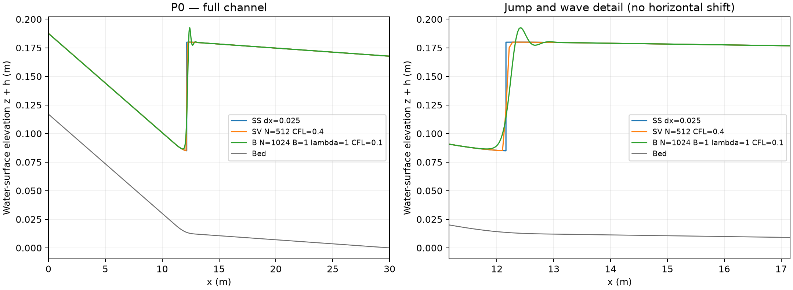

P0第一組完整示範：標準步法／聖維南／Boussinesq型模型
跟著本頁完成一輪P0：每一步都標明操作位置、應看到的結果及判讀方式。程式區塊與附帶Notebook一致。
Notebook檔案：p0_group_a.ipynb（在Jupyter中開啟） · 兩組示範入口
P0是一座長 、寬 的矩形渠道。水由左向右流， 是入口， 是出口；上游陡坡在 至 平滑變成緩坡。固定流量與尾水後，觀察水流由淺而快變成深而慢的位置。
SS是Standard-step method（標準步法）；SV是Saint-Venant（聖維南淺水方程）；B是本套件的定常壓力近似Boussinesq型模型。HEC-RAS是Hydrologic Engineering Center's River Analysis System，本教學使用6.6的一維定常混合流計算。第一組使用SS／SV／B；第二組使用SS／HEC-RAS。
是水面高程、 是渠底高程、 是當地水深，皆以m為單位； 是總流量（m³/s）、 是單位寬流量（m²/s）， 是福祿數。所有水面比較圖畫 ；摘要中的峰高則是水深 的峰值。
| 設定 | P0數值與意義 |
|---|---|
| 總流量／單位寬流量 | Q=0.05413786 m³/s；q=0.117691 m²/s |
| 上、下游坡度 | S1=0.008682536356512494；S2=0.0007079080998610611，都是小數坡度 |
| 粗糙係數與局部損失 | Manning n=0.008；Cc=Ce=0 |
| 入口 | 依S1算正常水深，hin≈0.07067283 m；Fr≈2 |
| 出口 | 固定hout=0.1676558423973493 m；床高zout=0，故出口水面高程與水深數值相同 |
| 臨界水深 | hc≈0.11218613 m；入口小於hc，出口大於hc |
完整的變床定義與方程在問題設定與方法講義。本次先重現原P0；不要直接改動cases/P0.json。
操作目錄
- 1. 建立自己的P0工作資料夾
- 2. 讀取物理參數，另外設定數值解析度
- 3. 先算標準步法，找到參考水躍
- 4. 執行聖維南淺水方程
- 5. 執行Boussinesq型定常壓力近似模型
- 6. 疊繪完整渠道與水躍局部水面
- 7. 讀取位置、水深與波動指標
- 8. 核對是否重現既有P0，而非只看曲線相似
- 9. 保存並撰寫第一段判讀
1. 建立自己的P0工作資料夾
先依安裝頁在原GC1991的WSL／Ubuntu裝好坡度套件。macOS／WSL的終端機進入解壓縮的slope-lab資料夾，執行 bash start_lab.sh p0_group_a.ipynb。Windows第一組的編譯與執行都在WSL／Ubuntu內進行。不要把下面的Python程式貼進終端機。
在Jupyter左側雙擊p0_group_a.ipynb；右上角核心選Slope Channel Lab。藍框中的說明不用執行；灰色程式格按Shift+Enter執行。看到 [*] 表示仍在計算，完成後會變為數字。請逐格等候，第一次不要使用Run All。
按Ctrl+S儲存Notebook。終端機保持開啟。計算時間依電腦而異，SV／B可能需數十秒至數分鐘；沒有新訊息時，先看核心是否仍忙碌，不要重複按執行。
只改學生代號，例如A1。這格會建立不重複的工作資料夾並印出完整位置。以下所有圖與表都放在該資料夾；重跑本格會建立新資料夾，後續格也要重新依序執行。
在Notebook執行以下整格：
from pathlib import Path
import json, csv, uuid
import numpy as np
import lab
from postprocess import plot_compare
from demo_support import read_json, save_json, save_rows, show_table, result_rows
from IPython.display import display, Image
assert Path("cases/P0.json").is_file(), "請從 slope-lab 根目錄開啟 Notebook"
STUDENT_ID = "A1"
CASE_ID = "P0"
work = Path("runs") / ("P0_A_" + uuid.uuid4().hex[:8])
work.mkdir(parents=True, exist_ok=False)
print("本次工作資料夾：", work.resolve())
2. 讀取物理參數，另外設定數值解析度
下格的case是「物理問題」，numerics是「如何計算」。P0的入口水深會由流量、寬度、粗糙係數及上游坡度自動求出，不需要另手算後輸入。核對印出的hin、hout與Fr_in。
SS用0.025 m斷面；SV用512個單元；B用1024個區間。這是一輪入門重現，不是三模式同網格精度比較。CFL是控制時間步大小的Courant–Friedrichs–Lewy參數；B中的lambda控制數值耗散，kappa是額外濾波的係數，均保持原值。
在Notebook執行以下整格：
case = lab.load_case(CASE_ID)
numerics = dict(ss_dx=0.025, sv_N=512, b_N=1024,
sv_CFL=0.4, b_CFL=0.1, lam=1.0, kappa=0.03,
end=300.0, mean_start=200.0, initial="uniform")
keys = ["id", "length_m", "width_m", "Q_m3s", "q_m2s",
"S1", "S2", "n", "hin_m", "hout_m", "yc_m", "Fr_in", "Fr_out"]
show_table([{"parameter": k, "value": case[k]} for k in keys])
save_json(work / "input.json", dict(student=STUDENT_ID, case=case, numerics=numerics))
3. 先算標準步法，找到參考水躍
執行下格只需Python。先追蹤上游超臨界分支與下游次臨界分支，再用比力相等決定跳接：
應得到 、、。若沒有成功狀態，先不要往下算SV或B。
在Notebook執行以下整格：
ss_run = lab.run_method(case, "ss", dx=numerics["ss_dx"], output=work / "runs")
ss_jump = read_json(ss_run / "summary.json")["checks"]["jump"]
show_table([{k: ss_jump[k] for k in ["x_m", "y1_m", "y2_m"]}])
4. 執行聖維南淺水方程
這一步需要安裝時建立的Basilisk編譯工具。lab.build()核對並準備執行程式。uniform表示起始時全渠先採入口水深，兩端邊界仍依P0固定。積分到物理時間300 s，輸出200–300 s的平均水面。
完成訊息中的「integrity passed」表示數值完整性與收支檢查通過；不等於水面已完全不隨時間變動。此P0粗網格的嚴格定常篩檢預期仍為False。
在Notebook執行以下整格：
lab.build()
sv_run = lab.run_method(case, "sv", N=numerics["sv_N"],
CFL=numerics["sv_CFL"], initial=numerics["initial"],
end=numerics["end"], mean_start=numerics["mean_start"],
output=work / "runs")
sv_meta = read_json(sv_run / "metadata.json")
print("執行狀態：", sv_meta["status"])
print("嚴格定常篩檢：", sv_meta["steady_screen"])
5. 執行Boussinesq型定常壓力近似模型
保持B=1（啟用非靜水壓修正）、lambda=1與kappa=0.03。此程式先以粗網格啟動，再逐層搜尋定常離散解，最後短時間續算核對。它不會從任意初場直接完成1024格的300 s完整物理演變。
因此B的續算時間是鬆弛時間；它與SV的物理300 s不是同一種時間。這一格通過也不代表波峰、波長已通過網格檢查。
在Notebook執行以下整格：
b_run = lab.run_method(case, "b", N=numerics["b_N"], CFL=numerics["b_CFL"],
lam=numerics["lam"], B=1, kappa=numerics["kappa"],
initial=numerics["initial"], continuation=0.1,
output=work / "runs")
run_paths = {"SS": ss_run, "SV": sv_run, "B": b_run}
save_json(work / "paths.json", {name: str(p) for name, p in run_paths.items()})
print("三模式資料夾已記錄在", work / "paths.json")
6. 疊繪完整渠道與水躍局部水面
程式讀各次profile.csv中的x_m與eta_m，統一畫 ，不把三條曲線水平平移對齊。左圖檢查整段渠道及邊界；右圖看水躍附近與波尾。兩張圖使用相同的物理坐標。
SS同一個x位置有兩個水深，故跳接接近垂直；SV的有限厚度受網格與數值通量影響；B可能有一串波峰。這些差異不能直接稱為實驗誤差。PNG適合報告，PDF適合放大列印。
在Notebook執行以下整格：
figure = plot_compare(list(run_paths.values()), work / "figures")
display(Image(filename=str(figure)))
print("已存圖：", figure, "以及 comparison.pdf")
7. 讀取位置、水深與波動指標
SS_xJ_m只在SS列填其動量跳接位置；SV與B用唯一50%上穿點x50_unique_m。兩者的定義不同。upstream_h_m與downstream_h_m是在固定外側區間的平均水深，不是入口／出口值，也不是直接取波峰。
N/A表示無法唯一決定或該方法不提取此量，不是0。B的peak_h_m是第一個符合條件的水深峰值；tail_wavelength_m是第二個峰起的相鄰峰距中位數；tail_efold_m只有足夠且依序衰減的峰谷差才有定義。
在Notebook執行以下整格：
rows = result_rows(run_paths)
show_table(rows)
save_rows(work / "metrics.csv", rows)
s = read_json(b_run / "summary.json")
print("B的全部10%、50%、90%上穿位置：", s["all_upcrossings_m"])
show_table(s["extrema"])
save_rows(work / "B_peaks.csv", s["extrema"])
sv_checks = read_json(sv_run / "summary.json")["checks"]
print("SV前後半平均最大差 (mm)：", 1000 * sv_checks["block_depth_change_m"])
print("SV最大時間標準差 (mm)：", 1000 * sv_checks["max_depth_sd_m"])
8. 核對是否重現既有P0，而非只看曲線相似
下格逐點比較本次水深與隨包附上的凍結參考資料，不重新平移或縮放曲線。應三列passed皆為True。它驗證你使用了相同程式設定；參考本身不是實驗真值。
若SV定常篩檢為False、但本格重現通過，兩者不矛盾：前者問「時間變化夠小嗎」，後者問「是否重算出原結果」。
在Notebook執行以下整格：
checks = []
for method, folder, refname, tol in [
("SS", ss_run, "ss_P0_dx0025.csv", 1e-8),
("SV", sv_run, "sv_N512_T300.dat", 2e-4),
("B", b_run, "b_N1024.dat", 1e-5)]:
a = np.genfromtxt(folder / "profile.csv", delimiter=",", names=True,
dtype=None, encoding="utf-8")
if method == "SS":
ref = np.genfromtxt(Path("reference") / refname, delimiter=",", names=True)
xx, hh = ref["x_m"], ref["h_m"]
else:
ref = np.loadtxt(Path("reference") / refname)
xx, hh = ref[:, 0], ref[:, 1]
assert len(xx) == len(a) and np.max(abs(xx-a["x_m"])) < 1e-8
error = float(np.max(abs(hh-a["h_m"])))
checks.append(dict(method=method, max_depth_difference_m=error,
tolerance_m=tol, passed=error <= tol))
show_table(checks)
save_json(work / "reproduction.json", checks)
assert all(c["passed"] for c in checks), "保留結果並核對設定，不要調大門檻"
9. 保存並撰寫第一段判讀
- 記錄SS跳接約12.16 m，說明坡度轉換區是11–13 m。
- 從metrics.csv抄入SV與B的唯一x50及外側水深，不混用三種位置定義。
- 描述B是否出現波峰，附峰高與峰距；本次只有一層B網格，不可寫「波形已收斂」。
- 寫出SV定常篩檢結果、與凍結資料的重現差異，解釋兩項檢查不同。
可採用句型：「在相同P0物理條件下，SS得到……；SV的200–300 s平均水面……；B的離散定常解……。三者對位置／外側水深呈現……，但本次尚未檢查……。」請以自己的數值填空。
保留整個work資料夾、已儲存的p0_group_a.ipynb、輸入、三次原始run、metrics.csv、B_peaks.csv、reproduction.json及兩種格式的圖。之後依第一組正式任務進行1024／2048與控制試算。本次不自動啟動那些額外計算。
本次實際執行的示範結果
以下是本教學Notebook以原P0參數重新執行的輸出；未改動既有凍結參考。學生可用來檢查量級，精確重現仍以下格逐點比對為準。
| 模式 | 位置定義 | 位置m | 上游平均h m | 下游平均h m | 峰h m | 尾波峰距m |
|---|---|---|---|---|---|---|
| SS | SS比力跳接 | 12.160061 | 0.070673 | 0.167656 | N/A | N/A |
| SV | 唯一50%上穿 | 12.171744 | 0.070673 | 0.167653 | N/A | N/A |
| B | 唯一50%上穿 | 12.208691 | 0.070647 | 0.167661 | 0.179877 | 0.518225 |
示範判讀
SS在坡度轉換段內跳接，位置約12.160 m。SV與B的唯一50%上穿位置分別約比SS下游12 mm與49 mm；這是不同定義下的位置比較，不能直接當成誤差。三模式外側平均水深都接近上游0.0707 m、下游0.1677 m，顯示大尺度水深相近。
B第一個水深峰約0.17988 m，三個可辨峰的峰谷差約14.96、0.643、0.0267 mm，這一次計算沿下游衰減。但只有3個可辨峰，不足套件要求的至少4峰，因此衰減長度為N/A；不能從此單一網格宣布波尾已收斂。尾波峰距約0.518 m，此值本次僅來自第二與第三峰。
SV前後半平均最大差約2.102 mm、最大時間標準差約1.147 mm，因此嚴格定常篩檢為False。三方法與凍結參考的最大水深差分別約0、10⁻¹²、9.33×10⁻¹⁰ m，三項重現檢查仍通過。
圖上B最高水面高程會高於0.17988 m，因為圖畫的是η，而峰值表列的是h；當地渠底高程也要加上。

第一次操作常見問題
| 現象 | 下一步 |
|---|---|
| No module named lab／找不到cases/P0.json | Notebook不在套件根目錄，或核心選錯；回安裝頁核對。 |
| NameError，例如work未定義 | 核心重啟或跳格；從imports與工作路徑設定恢復，計算格不要無意重跑。 |
| 畫不出圖 | 先看前一計算格是否成功；不要拿failed狀態的資料畫成功圖。 |
| 圖與講義有差 | 核對P0、uniform、N、CFL、lambda及平均時間，再看逐點比較；勿用改n讓圖相似。 |
| HEC流量／Fr檢查失敗 | 核對SI單位、輸出小數位、是否取錯Q或水深欄；不要放寬檢查值。 |